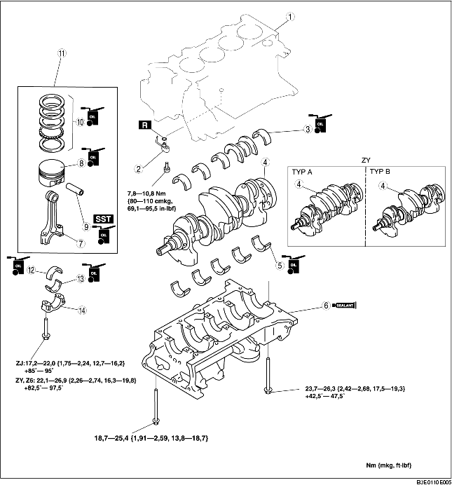

1. Die Teile gemäß der Reihenfolge in der Tabelle einbauen.

.
|
1
|
Oberer Zylinderblock
|
|
2
|
Öldüsenventil
|
|
3
|
Obere Hauptlagerschale
|
|
4
|
Kurbelwelle
|
|
5
|
Untere Hauptlagerschale
|
|
6
|
Unterer Zylinderblock
|
|
7
|
Pleuelstange
|
|
8
|
Kolben
(Siehe Einbauhinweis für Kolben)
|
|
9
|
Kolbenbolzen
(Siehe Einbauhinweis für Kolbenbolzen)
|
|
10
|
Kolbenring
(Siehe Einbauhinweis für Kolbenring)
|
|
11
|
Kolben, Pleuelstange
|
|
12
|
Obere Pleuellagerschale
|
|
13
|
Untere Pleuellagerschale
|
|
14
|
Pleuellagerdeckel
|
1. Die obere und untere Hauptlagerschale wie abgebildet zusammensetzen.
1. Silikondichtmittel wie abgebildet auf die Aufsetzfläche des unteren Zylinderblocks auftragen.
2. Die Befestigungsschrauben A für den unteren Zylinderblock in der in der Abbildung gezeigten Reihenfolge in zwei Schritten festziehen.
3. Die Montageschrauben B des unteren Zylinderblocks in der in der Abbildung gezeigten Reihenfolge festziehen.
4. Schrauben A lösen und die Montageschrauben des unteren Zylinderblocks in der gezeigten Reihenfolge ein zweites Mal festziehen.
1. Die Kolbenringstöße der einzelnen Ringe wie abgebildet versetzen.
2. Den Kolben in den Zylinder einführen. Dabei muss die Markierung auf der Oberseite des Kolbens zur Vorderseite des Motors weisen.
1. Das SST wie dargestellt zusammensetzen.
2. Die SSTs (Anschlagschraube) auf Länge L einstellen.
3. Die Endmarkierung auf der Pleuelstange und die F-Markierung auf dem Kolben müssen wie abgebildet in dieselbe Richtung weisen.
4. Den Kolbenbolzen und die SSTs in den Kolben und die Pleuelstange einführen.
5. Das SST wie gezeigt einstellen.
6. Den Kolbenbolzen in den Kolben und die Pleuelstange mit der Hydraulikpresse einpressen, bis das SST (Führung) das SST (Anschlagschraube) berührt. Wenn sie unter dem Sollwert liegt, den Kolbenbolzen oder die Pleuelstange austauschen.
1. Den Ölabstreifring aufsetzen.
2. Den zweiten Ring mit der Nut nach unten einsetzen.
3. Den oberen Ring mit der Abstreifkante nach unten einsetzen.
1. Die Pleuellagerschale in den Pleuel einsetzen und den Pleuelstangendeckel wie abgebildet montieren.
1. Die Pleuellagerdeckel mit gefluchteten Sicherungsstiften und Richtmarkierungen montieren.
2. Die Schrauben der Pleuelstangendeckel in zwei Durchgängen festziehen.